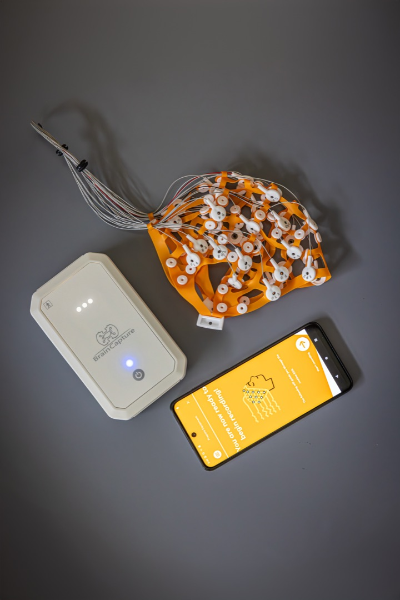

Scaling global neurodiagnostics: Self-supervised learning for point-of-care EEG
Talk · IDA Driving AI 2026 · May 2026 · With Magnus Guldberg Pedersen

Industrial PhD · BrainCapture & DTU Health Tech
I build large EEG foundation models and the tools to understand them, so that clinical EEG can be interpreted faster, more transparently, and where neurologists are scarce.
I am an Industrial PhD student at BrainCapture and the Section for Digital Health at DTU Health Tech, where I lead the development of large EEG foundation models.
My research uses self-supervised learning to learn general-purpose representations of brain activity, and mechanistic interpretability to open those models up: turning what they have learned into features clinicians can inspect and trust. Working between a university and a medtech company, I care about results that survive the move from benchmark to clinic, including on low-cost hardware in resource-limited settings.
Self-supervised pretraining on large, heterogeneous EEG and sleep corpora, and the preprocessing needed to make that data usable at scale.
Sleep pretraining →Sparse autoencoders and concept-based explanations that reveal what these models represent, in terms clinicians can check.
NeurIPS 2026 →Low-cost, portable recording and guided electrode placement, validated in clinical studies in resource-limited settings.
Kenya study →Sparse autoencoders decompose the internal representations of EEG foundation models into features that can be inspected and interpreted.
NeurIPS 2026 · Conference on Neural Information Processing Systems (to appear) 5 citations
Lehn-Schiøler, W., Kjær, M. R., Thapa, R., Pedersen, M. G., Storgaard, A. M., Williams, N., Gatej, R., Lehn-Schiøler, T., Brink-Kjær, A., Puthusserypady, S., Beniczky, S., Zou, J., & Hansen, L. K. (2026). Mechanistic Interpretability of EEG Foundation Models via Sparse Autoencoders. In Advances in Neural Information Processing Systems. To appear. https://arxiv.org/abs/2605.13930
@inproceedings{lehnschioler2026mechanistic,
title = {Mechanistic Interpretability of {EEG} Foundation Models via Sparse Autoencoders},
author = {Lehn-Schiøler, W. and Kjær, M. R. and Thapa, R. and Pedersen, M. G. and Storgaard, A. M. and Williams, N. and Gatej, R. and Lehn-Schiøler, T. and Brink-Kjær, A. and Puthusserypady, S. and Beniczky, S. and Zou, J. and Hansen, L. K.},
booktitle = {Advances in Neural Information Processing Systems},
year = {2026},
note = {To appear},
eprint = {2605.13930},
archivePrefix = {arXiv},
url = {https://arxiv.org/abs/2605.13930}
}A clinical feasibility study of recording diagnostic EEG with a smartphone-based system in Kenya.
arXiv:2605.08157 · May 2026 Preprint
Lehn-Schiøler, W., Enkhtsetseg, N., Storgaard, A. M., Pedersen, M. G., Rice, D., Wambugu, G., Fidele, N. J., Cacic Hribljan, M., Arbune, A. A., Armand Larsen, S., & Beniczky, S. (2026). Clinical Feasibility of Smartphone-based EEG in Kenya. arXiv preprint arXiv:2605.08157. https://arxiv.org/abs/2605.08157
@misc{lehnschioler2026clinical,
title = {Clinical Feasibility of Smartphone-based {EEG} in Kenya},
author = {Lehn-Schiøler, W. and Enkhtsetseg, N. and Storgaard, A. M. and Pedersen, M. G. and Rice, D. and Wambugu, G. and Fidele, N. J. and Cacic Hribljan, M. and Arbune, A. A. and Armand Larsen, S. and Beniczky, S.},
year = {2026},
eprint = {2605.08157},
archivePrefix = {arXiv},
url = {https://arxiv.org/abs/2605.08157}
}Pretraining on large collections of sleep recordings transfers to biosignal tasks beyond sleep.
arXiv:2605.02500 · May 2026 Preprint
Lehn-Schiøler, W., Kjær, M. R., Hempel, P., Pedersen, M. G., Thapa, R., He, B., Spicher, N., Brink-Kjær, A., Hansen, L. K., & Mignot, E. (2026). Pretraining on Sleep Data Improves non-Sleep Biosignal Tasks. arXiv preprint arXiv:2605.02500. https://arxiv.org/abs/2605.02500
@misc{lehnschioler2026pretraining,
title = {Pretraining on Sleep Data Improves non-Sleep Biosignal Tasks},
author = {Lehn-Schiøler, W. and Kjær, M. R. and Hempel, P. and Pedersen, M. G. and Thapa, R. and He, B. and Spicher, N. and Brink-Kjær, A. and Hansen, L. K. and Mignot, E.},
year = {2026},
eprint = {2605.02500},
archivePrefix = {arXiv},
url = {https://arxiv.org/abs/2605.02500}
}Evaluation of a low-cost, portable EEG device as a way to close the diagnostic gap where conventional EEG is unavailable.
Epileptic Disorders, vol. 26 (5), pp. 694–700 27 citations
Armand Larsen, S., Klok, L., Lehn-Schiøler, W., Gatej, R., & Beniczky, S. (2024). Low-cost portable EEG device for bridging the diagnostic gap in resource-limited areas. Epileptic Disorders, 26(5), 694–700. https://doi.org/10.1002/epd2.20266
@article{armandlarsen2024cost,
title = {Low-cost portable {EEG} device for bridging the diagnostic gap in resource-limited areas},
author = {Armand Larsen, S. and Klok, L. and Lehn-Schiøler, W. and Gatej, R. and Beniczky, S.},
journal = {Epileptic Disorders},
volume = {26},
number = {5},
pages = {694--700},
year = {2024},
doi = {10.1002/epd2.20266},
url = {https://onlinelibrary.wiley.com/doi/10.1002/epd2.20266}
}Industry
BrainCapture is a Danish medtech company building a low-cost, portable EEG system: an electrode cap and a smartphone-based recorder that let health workers without specialist training record clinical-grade EEG, with analysis supported remotely and by machine learning.
I joined as a data scientist in 2021 and now lead its foundation-model research as an Industrial PhD, connecting the machine learning to the product and to clinical studies in the field.



Talk · IDA Driving AI 2026 · May 2026 · With Magnus Guldberg Pedersen

Feature · AI Denmark Summit 2025 · Dec 2025 · In Danish
I co-supervise special courses and BSc/MSc theses at DTU, with real clinical EEG data, GPU compute, and the models we work on at BrainCapture.
How to start a project with me →